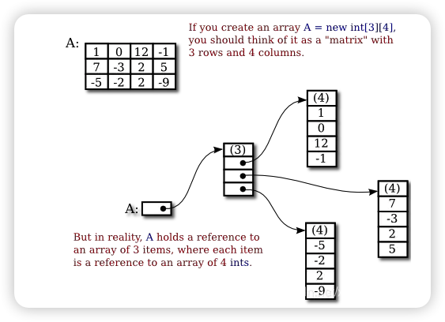
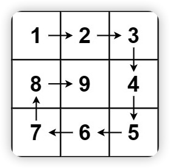
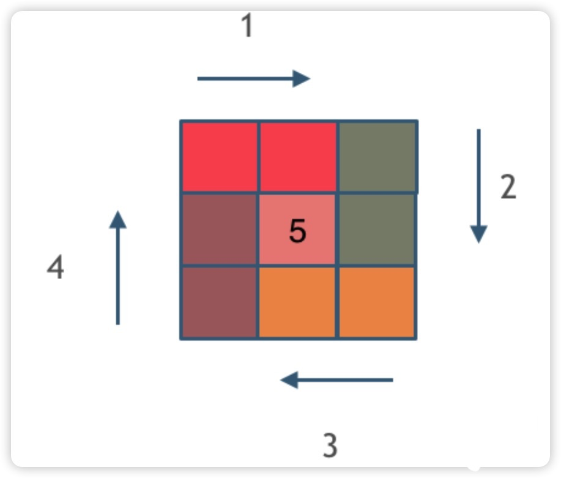

说在前面：之前刷题都没有按照知识点分类整理过，最近在网上看到推荐代码随想录的算法讲义，就想按照他的推荐系统的把算法这一块拾起来，在自己的博客里做一个记录，也当做日后自己复习的笔记了。
数组理论基础
数组是非常基础的数据结构。
一维数组
首先要知道数组在内存中的存储方式：数组是存放在连续内存空间上的相同类型数据的集合。
数组可以方便的通过下标索引的方式获取到下标下对应的数据，举一个字符数组的例子，如图所示：

需要两点注意的是：
- 数组下标都是从0开始的
- 数组内存空间的地址是连续的
正是因为数组的在内存空间的地址是连续的，所以我们在删除或者增添元素的时候，就难免要移动其他元素的地址。
数组的元素是不能删的，只能覆盖。例如删除下标为3的元素，需要对下标为3的元素后面的所有元素都要做移动操作，如图所示：

二维数组
Java是没有指针的，同时也不对程序员暴露其元素的地址，寻址操作完全交给虚拟机。所以看不到每个元素的地址情况。
在 Java 当中，二维数组的存储空间实际上并不是连续的，而是这样的：

一维数组在堆上连续的内存空间直接存储值，二维数组在连续的地址上存储一维数组的引用地址，一维数组与一维数组并不一定靠在一起，但是这些一维数组内部的值是在连续地址上的。更高维的数组继续以此类推，只有最后一维数组在连续地址上保存值，其他纬度均在连续地址上保存下一维度的引用地址。
可以通过代码验证一下：
1 | public static void test_arr() { |
输出的地址为：
1 | [I@36baf30c |
这不是真正的地址，而是经过处理过后的数值了，我们也可以看出，二维数组的每一行头结点的地址是没有规则的，更谈不上连续。
相关题目
704、二分查找
给定一个 n 个元素有序的（升序）整型数组 nums 和一个目标值 target ，写一个函数搜索 nums 中的 target，如果目标值存在返回下标，否则返回 -1。
示例 1:
1 | 输入: nums = [-1,0,3,5,9,12], target = 9 |
示例 2:
1 | 输入: nums = [-1,0,3,5,9,12], target = 2 |
提示：
- 你可以假设 nums 中的所有元素是不重复的。
- n 将在 [1, 10000]之间。
- nums 的每个元素都将在 [-9999, 9999]之间。
思路
这道题目的前提是数组为有序数组，同时题目还强调数组中无重复元素，因为一旦有重复元素，使用二分查找法返回的元素下标可能不是唯一的，这些都是使用二分法的前提条件，当大家看到题目描述满足如上条件的时候，可要想一想是不是可以用二分法了。
二分查找涉及的很多的边界条件，逻辑比较简单，但就是写不好。例如到底是 while(left < right) 还是 while(left <= right)，到底是right = middle呢，还是要right = middle - 1呢？
我们定义 target 是在一个在左闭右闭的区间里，也就是[left, right] （这个很重要非常重要）
while (left <= right)要使用 <= ，因为left == right是有意义的，所以使用 <=if (nums[middle] > target)right 要赋值为 middle - 1，因为当前这个nums[middle]一定不是target，那么接下来要查找的左区间结束下标位置就是 middle - 1
代码如下：
1 | class Solution { |
相关题目推荐
-
1
2
3
4
5
6
7
8
9
10
11
12
13
14
15
16
17
18
19
20
21
22
23
24
25
26
27
28
29
30
31
32
33
34
35
36
37
38
39
40
41
42
43class Solution {
public int[] searchRange(int[] nums, int target) {
int[] ans = new int[2];
// 寻找左边界
ans[0] = findLeftIndex(nums,target);
// 寻找右边界
ans[1] = findRightIndex(nums,target);
return ans;
}
public int findLeftIndex(int[] nums,int target){
int left=0,right=nums.length-1;
int ans=-1;
while(left<=right){
int mid=(left+right)>>1;
if(nums[mid]>target){
right=mid-1;
}else if(nums[mid]<target){
left=mid+1;
}else{
right=mid-1;
ans=mid;
}
}
return ans;
}
public int findRightIndex(int[] nums,int target){
int left=0,right=nums.length-1;
int ans=-1;
while(left<=right){
int mid = (left+right)>>1;
if(nums[mid]>target){
right=mid-1;
}else if(nums[mid]<target){
left=mid+1;
}else{
left=mid+1;
ans=mid;
}
}
return ans;
}
}
27、移除元素（双指针）
给你一个数组 nums 和一个值 val，你需要 原地 移除所有数值等于 val 的元素，并返回移除后数组的新长度。
不要使用额外的数组空间，你必须仅使用 O(1) 额外空间并原地修改输入数组。
元素的顺序可以改变。你不需要考虑数组中超出新长度后面的元素。
示例 1:
1 | 输入：nums = [3,2,2,3], val = 3 |
示例 2:
1 | 输入：nums = [0,1,2,2,3,0,4,2], val = 2 |
提示：
0 <= nums.length <= 1000 <= nums[i] <= 500 <= val <= 100
思路
要知道数组的元素在内存地址中是连续的，不能单独删除数组中的某个元素，只能覆盖。
思路1：
因为数组中的元素大小都在0~50之间，而且不计返回新数组的元素顺序，可以把数组中元素等于val的值设为一个大于50的值，然后对原数组sort操作。
1 | class Solution { |
思路2：
两个for循环的暴力法——第一个for遍历每个元素，第二个for将数组中元素等于val的值之后的元素前移一位。

1 | class Solution { |
思路3：
快慢指针法：通过一个快指针和慢指针在一个for循环下完成两个for循环的工作。
- 快指针：寻找新数组的元素 ，新数组就是不含有目标元素的数组
- 慢指针：指向更新新数组下标的位置

1 | class Solution { |
总结：第一种思路改变了元素的相对位置，而暴力法和快慢指针法并没有改变新数组元素之间的相对位置。
相关题目推荐
双指针有两种，一种是同侧的快慢指针，一种是异侧的双指针，要注意使用的情景。使用双指针往往能将暴力法O(n^2)的时间复杂度降到O(n)。
977、有序数组的平方
给你一个按 非递减顺序 排序的整数数组 nums，返回 每个数字的平方 组成的新数组，要求也按 非递减顺序 排序。
示例1：
1 | 输入：nums = [-4,-1,0,3,10] |
示例2：
1 | 输入：nums = [-7,-3,2,3,11] |
思路
思路1：排序
1 | class Solution { |
- 时间复杂度
O(nlogn)
思路2：双指针
1 | class Solution { |
- 时间复杂度
O(n)
209、长度最小的子数组
给定一个含有 n 个正整数的数组和一个正整数 target 。
找出该数组中满足其和 ≥ target 的长度最小的 连续子数组 ，并返回其长度。如果不存在符合条件的子数组，返回 0 。
示例1：
1 | 输入：target = 7, nums = [2,3,1,2,4,3] |
示例2：
1 | 输入：target = 4, nums = [1,4,4] |
示例3：
1 | 输入：target = 11, nums = [1,1,1,1,1,1,1,1] |
思路
思路1：暴力解法 – 据说后面更新了题目数据用例，暴力解法已经超时了
1 | class Solution { |
思路2：滑动窗口
所谓滑动窗口，就是不断的调节子序列的起始位置和终止位置，从而得出我们要想的结果。
在暴力解法中，是一个for循环滑动窗口的起始位置，一个for循环为滑动窗口的终止位置，用两个for循环 完成了一个不断搜索区间的过程。
那么滑动窗口如何用一个for循环来完成这个操作呢？
首先要思考 如果用一个for循环，那么应该表示 滑动窗口的起始位置，还是终止位置。在快慢指针中，我们用for循环记录快指针的索引，其实滑动窗口本质上也是一种双指针，只不过这种解法更像是一个窗口的移动，所以叫做滑动窗口更适合一些。
所以我们用一个for循环，那么应该表示 滑动窗口的终止位置。
窗口就是： 满足其和 ≥ s 的长度最小的 连续 子数组。
窗口的起始位置如何移动：如果当前窗口的值大于s了，窗口就要向前移动了（也就是该缩小了）。
窗口的结束位置如何移动：窗口的结束位置就是遍历数组的指针，也就是for循环里的索引。
解题的关键在于 窗口的起始位置 如何移动，如图所示：

1 | class Solution { |
关于时间复杂度是
O(n)的一些疑问——不要以为for里放一个while就以为是
O(n^2)啊， 主要是看每一个元素被操作的次数，每个元素在滑动窗后进来操作一次，出去操作一次，每个元素都是被操作两次，所以时间复杂度是 2 × n 也就是O(n)。
相关题目推荐
1 | // 超时？ |
1 | // Right Answer |
Java中String和char的相互转换：
String转换成char：
- 使用
String.charAt(index)（返回值为char）可以得到String中某一指定位置的char。- 使用
String.toCharArray()（返回值为char[]）可以得到将包含整个String的char数组。这样我们就能够使用从0开始的位置索引来访问string中的任意位置的元素。char转换成String：
2
3
4
5
6
7
8
9
10
11
12
13
14
15
16
17
18
2. String s = String.valueOf(new char[]{'c'}); //将一个char数组转换成String
3. String s = Character.toString('c');
// Character.toString(char)方法实际上直接返回String.valueOf(char)
4. String s = new Character('c').toString();
5. String s = "" + 'c';
// 虽然这个方法很简单，但这是效率最低的方法
// Java中的String Object的值实际上是不可变的，是一个final的变量。
// 所以我们每次对String做出任何改变，都是初始化了一个全新的String Object并将原来的变量指向了这个新String。
// 而Java对使用+运算符处理String相加进行了方法重载。
// 字符串直接相加连接实际上调用了如下方法：
// new StringBuilder().append("").append('c').toString();
6. String s = new String(new char[]{'c'});
59.螺旋矩阵II（模拟）
给你一个正整数 n ，生成一个包含 1 到 n2 所有元素，且元素按顺时针顺序螺旋排列的 n x n 正方形矩阵 matrix 。
示例1：

1 | 输入：n = 3 |
示例2：
1 | 输入：n = 1 |
思路
模拟顺时针画矩阵的过程:
① 填充上行从左到右 ② 填充右列从上到 ③ 填充下行从右到左 ④ 填充左列从下到上
一圈下来，我们要画每四条边，这四条边怎么画，每画一条边都要坚持一致的左闭右开的原则，这样这一圈才能按照统一的规则画下来。
1 | class Solution { |
相关题目推荐
数组总结
回顾一下数组的四种经典题型，每一种题型都对应着一种思想。
数组必会知识
1、在《Java核心技术》中对数组的定义是：一种可以用来存储同一类型值的集合。
2、数组的内存空间分配：
- 一维数组：存放在连续内存空间上
- 二维（高维）数组：最后一个维度的元素存放在连续的内存空间上
3、数组不能删除单一元素，只能覆盖。
二分法
考察数组的基本操作，思路很简单，但是通过率在简单题里并不高，不要轻敌。
可以使用暴力解法，如果追求更优的算法，建议试一试用二分法，来解决这道题目。
- 暴力解法时间复杂度：
O(n) - 二分法时间复杂度：
O(logn)
二分法是算法面试中的常考题，建议吃透上面列举的二分题目，锻炼自己手撕二分的能力。
双指针法
双指针法（快慢指针法）：通过一个快指针和慢指针在一个for循环下完成两个for循环的工作。
- 暴力解法时间复杂度：
O(n^2) - 双指针时间复杂度：
O(n)
这道题目迷惑了不少同学，纠结于数组中的元素为什么不能删除，主要是因为以下两点：
- 数组在内存中是连续的地址空间，不能释放单一元素，如果要释放，就是全释放。
双指针法（快慢指针法）在数组和链表的操作中是非常常见的，很多考察数组和链表操作的面试题，都使用双指针法。
滑动窗口
本题介绍了数组操作中的另一个重要思想：滑动窗口。
- 暴力解法时间复杂度：
O(n^2) - 滑动窗口时间复杂度：
O(n)
本题中，主要要理解滑动窗口如何移动 窗口起始位置，达到动态更新窗口大小的，从而得出长度最小的符合条件的长度。
滑动窗口的精妙之处在于根据当前子序列和大小的情况，不断调节子序列的起始位置。从而将O(n^2)的暴力解法降为O(n)。
如果没有接触过这一类的方法，很难想到类似的解题思路，滑动窗口方法还是很巧妙的。
模拟行为
模拟类的题目在数组中很常见，不涉及到什么算法，就是单纯的模拟，十分考察大家对代码的掌控能力。
相信大家有遇到过这种情况： 感觉题目的边界调节超多，一波接着一波的判断，找边界，拆了东墙补西墙，好不容易运行通过了，代码写的十分冗余，毫无章法，其实真正解决题目的代码都是简洁的，或者有原则性的，大家可以在这道题目中体会到这一点。